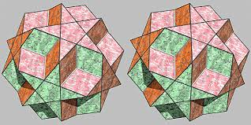
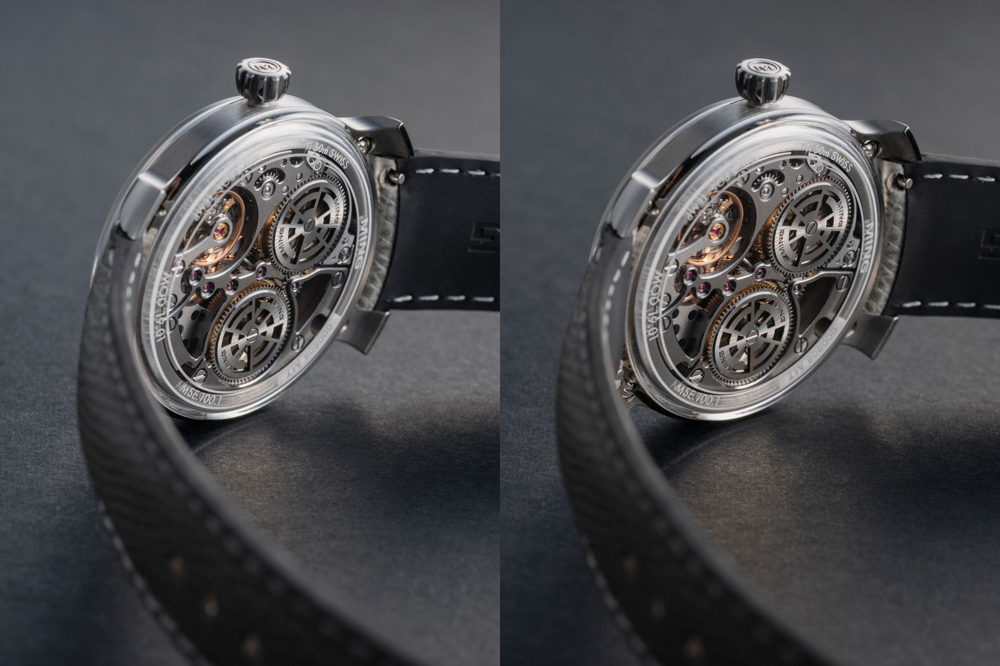
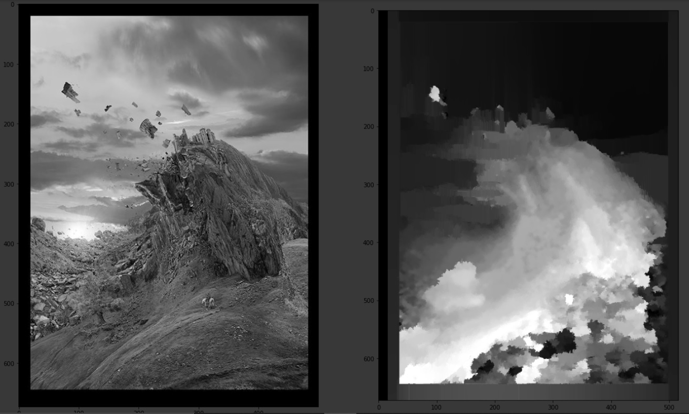

Depth Maping with OpenCV
In this we are going to map the depth in image with OpenCV.
OpenCV
This is an machine learning and image processing library. OpenCV Documentation. This is widely used, basically uses every where This library contains almost all the tools required for image prosessing from importing, adjusting, changing its property or it can even work in real time. Code for OpenCV can be written in Python, C++, Java and can be integrated into many languges. This is one-of the best open-source tool avilable for the people in this feild and also updated on time.
Depth Maping
In an image each pixel has its own depth and each depth is shown by grayscale. Each depth of pixel is means the distance of surface to a viewpoint, like from place the image is taken. For this 2 images are required of same, those images are called stereoscopic images, Like-  
Stereoscopic images images same but camera is moved by some cm in case of Right Image. Each different depth is of different shade in result output and can be easyly differentiable from eyes. Depth maping has same concept as human eye, we look at a common point and have 2 different prospective, same the system need 2 images to create its own view, with its help it differentiates between the depths.
Step 1. Download
- for download with python
pip install opencv-python - for download with Anaconda
conda install -c conda-forge opencv - In-case error comes try
this is when your pip is old. Also can use pip command in Anacondapip install pip
Step 2. Copy Images
Download and Add these images ( l.jpg, r.jpg) into your Google Drive. This is done because sometimes images are loaded in Google colab and error comes.
{kind=link}
{kind=link}
Step 3. Open Code
Code can be open into colab from single tap, which will pop-up on the top of source code.
Step 4. Run
To run the code tap on Run or press Alt+Enter to run, on first it will link your Google Drive with Google Colab so it can acess the images from Step 2, it will not harm any of your files privacy is maintained.
Additional
- Your can use your own images but remember they have to be stereoscopic images
- In-case it gives error of nonetype then system was not able to find the images
- In-case to bit or binary error
try making these as comment
imgL = np.array(imgL, dtype=np.uint8) imgR = np.array(imgR, dtype=np.uint8)
- To change from grayscale to RGB
remove 'gray' from all plt.imshow(imgL,'gray') plt.imshow(filteredImg,'gray')
Result
Result should look like this 
So you have completed this topic. Congratulations
Hope you learnt something new
Happy Learning!! 📚